Поселок Листвянка
Листвянка - небольшой поселок на Байкале, с хорошо развитой туристической инфраструктурой. В поселке есть рестораны, гостиницы, рыбные и сувенирные рынки. Также в поселке можно посетить зоопарк и знаменитый Байкальский музей. Поселок окружен многими туристическими достопримечательностями, посещение которых начинается с Листвянки. Кроме самого озера Байкал, с поселка можно добраться к Шаман-камню, памятному камню Вампилова, картинной галереи Пламеневского, Байкальской астрофизической лаборатории и другим интересным местам. Также из поселка можно наблюдать удивительную панораму Байкала.
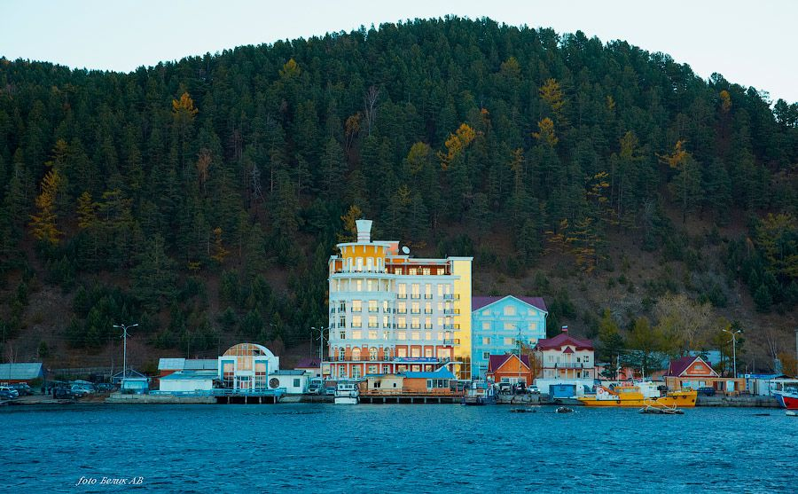
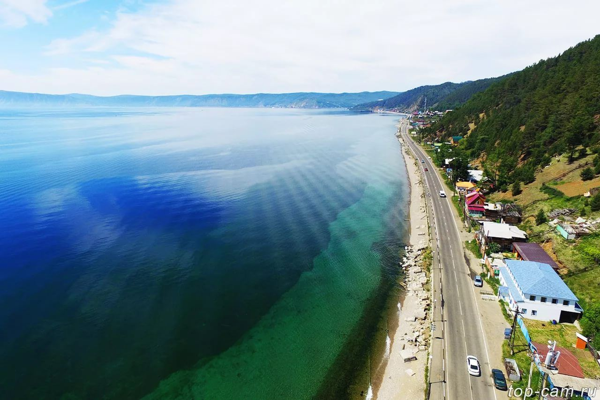
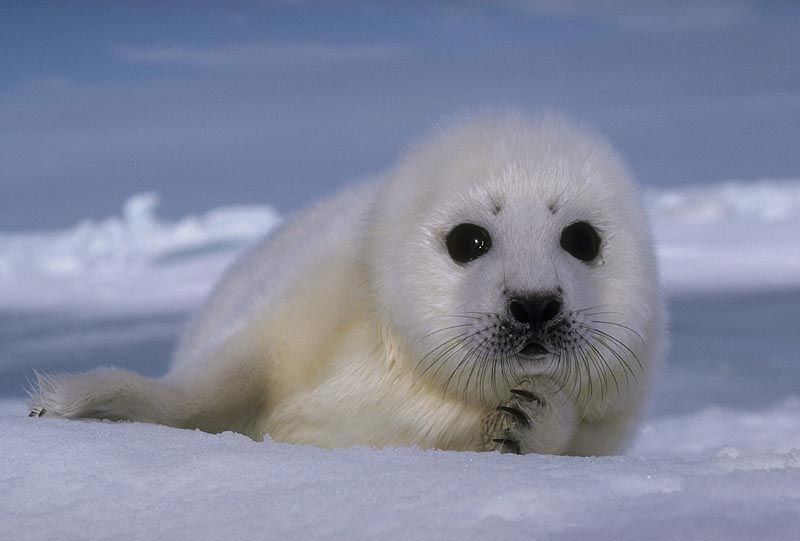
Бухта Песчаная
Бухта Песчаная – одно из самых известных и живописных мест на озере Байкал – не оставляет никого равнодушным. За бухтой закрепилось название Байкальская Ривьера, и она объявлена памятником природы.
Первозданные таежные склоны Приморского хребта с причудливыми группами скал полого спускаются к Байкалу. Особенно красива панорама бухты поздней осенью, когда яркие осенние краски смешанного леса украшают склоны прибрежных гор. Покой этого чудесного места охраняют две скалы, похожие на родных братьев: Большая Колокольня и Малая Колокольня.
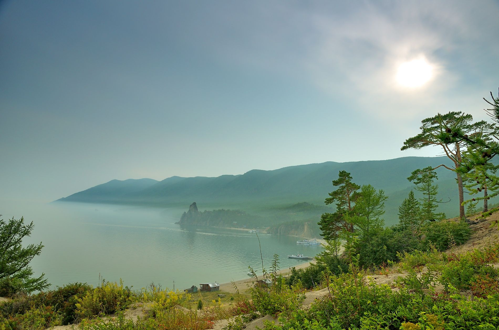
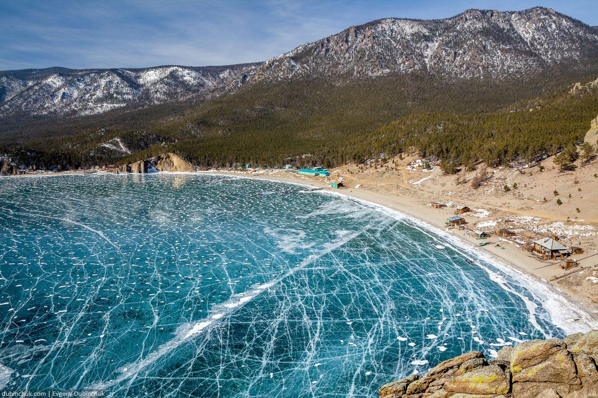
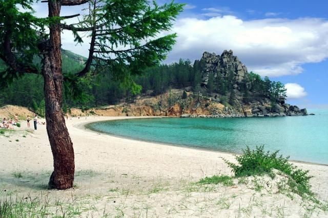
Тальцы
Неподалёку от Иркутска находится удивительное место, где можно своими глазами увидеть, как был устроен быт коренных народностей, заселявших берега Байкала (тофаларцев, бурят, эвенков и русских), и какие традиции они передавали из поколения в поколение. На большой территории в 70 га проводится много замечательных экскурсий: посещение национальных жилищ, традиционные чаепития с мёдом, а также мастер-классы, во время которых интересно самому попробовать сделать изделия из бересты или глины. Настоящий рай для поклонников этнографического туризма! Вход на территорию платный.
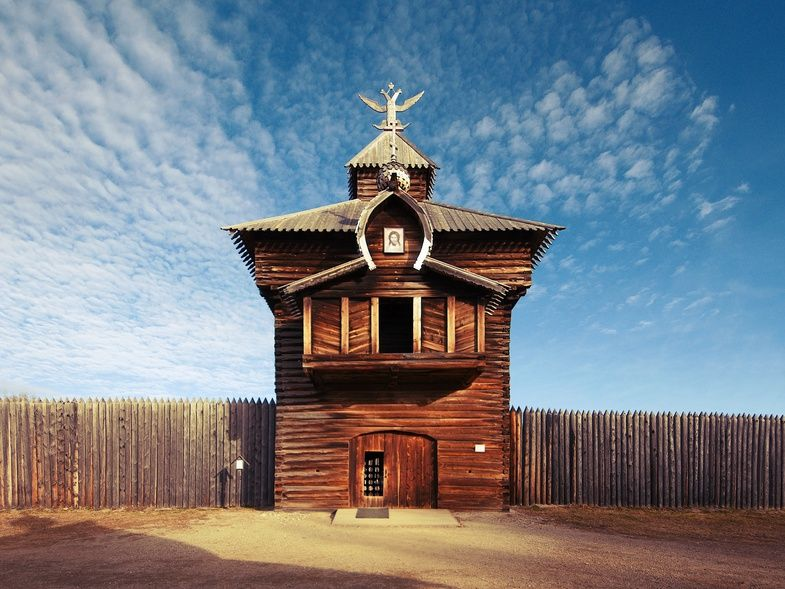
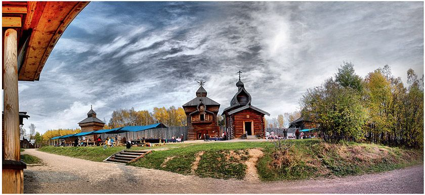
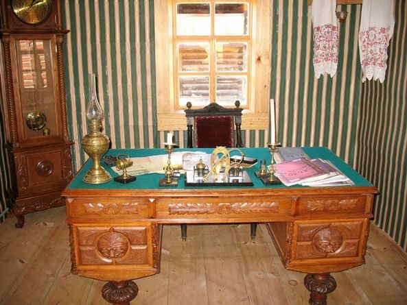
Хужир
Обязательно нужно совершить путешествие на самый большой байкальский остров — Ольхон, — отделённый от западного берега Малым или Узким морем, по-бурятски «Нарин Далай». Хужир — это не просто посёлок, это настоящая ольхонская столица, где проживает большинство островитян. Главная достопримечательность огромного острова — скала Шаманка, расположенная на самой оконечности мыса Бурхан. Она почитаема всеми жителями Прибайкалья, и особенно — буддистами. Издалека видны стоящие возле мыса 13 ритуальных столбов сэрге. В Хужире есть также небольшой краеведческий музей, а в 4 км находится этнографическая бурятская деревня, в которой построены традиционные жилища и можно попробовать национальные блюда бурятской кухни. самый большой байкальский остров — Ольхон, — отделённый от западного берега Малым или Узким морем, по-бурятски «Нарин Далай». Хужир — это не просто посёлок, это настоящая ольхонская столица, где проживает большинство островитян. Главная достопримечательность огромного острова — скала Шаманка, расположенная на самой оконечности мыса Бурхан. Она почитаема всеми жителями Прибайкалья, и особенно — буддистами. Издалека видны стоящие возле мыса 13 ритуальных столбов сэрге. В Хужире есть также небольшой краеведческий музей, а в 4 км находится этнографическая бурятская деревня, в которой построены традиционные жилища и можно попробовать национальные блюда бурятской кухни.
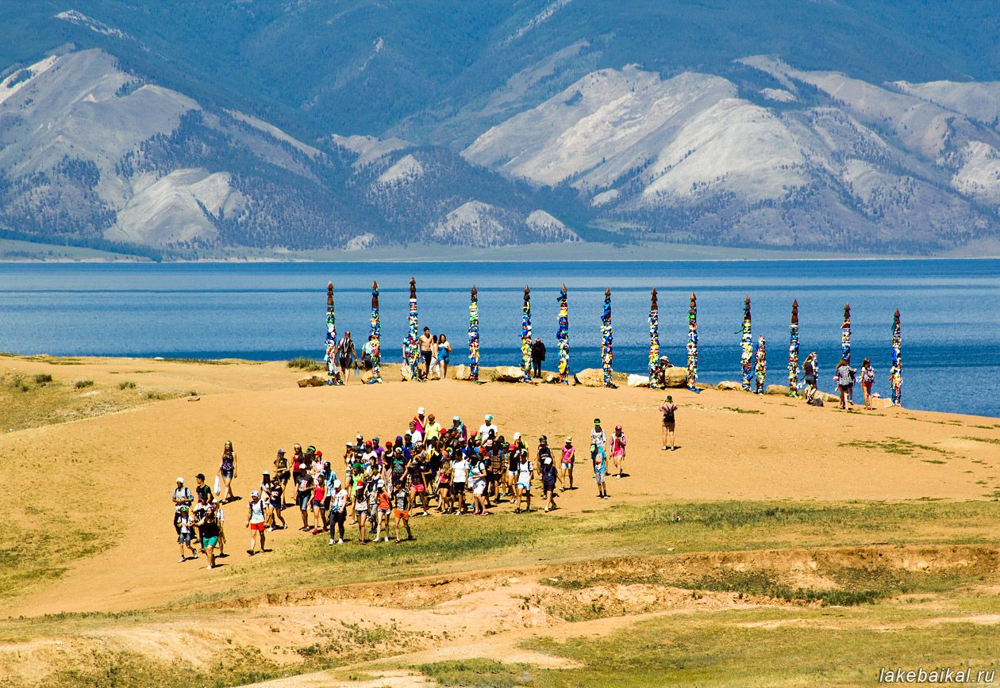
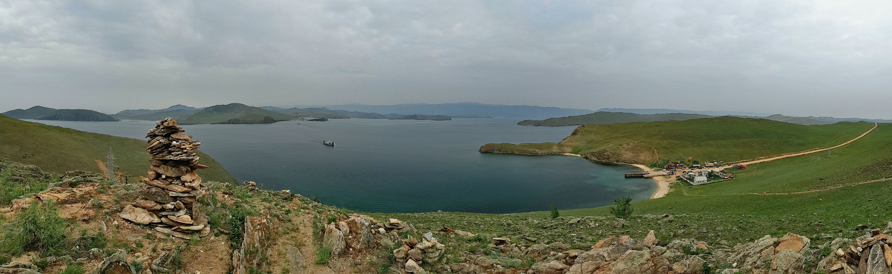
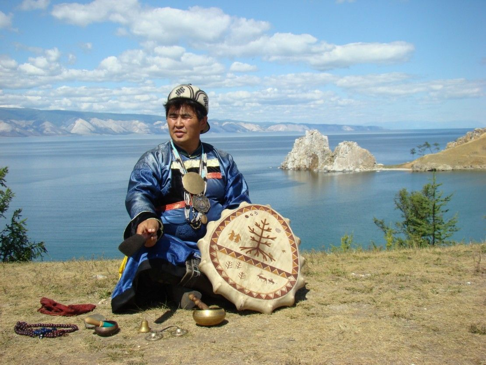
Слюдянка
Слюдянка – столица района Иркутской области. Город Слюдянка - один из двух городов Иркутской области расположенных на самом берегу озера Байкал. Население города составляет около 20 тысяч человек. Слюдянка известна своими минералами и мраморами. Самый известный минерал, добываемый в окрестностях Слюдянки, конечно, слюда. Её месторождения, правда, потеряли промышленное значение. Зато мрамор в Слюдянке добывают до сих пор, причём открытым способом. В Слюдянке есть музей минералов, где можно полюбоваться всем богатством самоцветов региона. Из города начинается популярный маршрут к пику Черского.
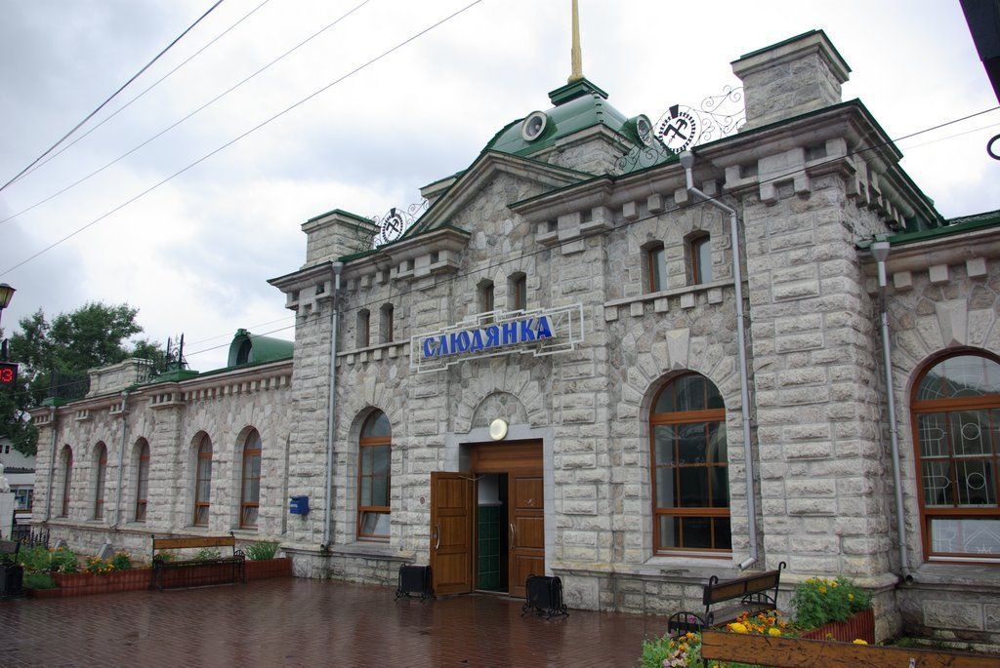
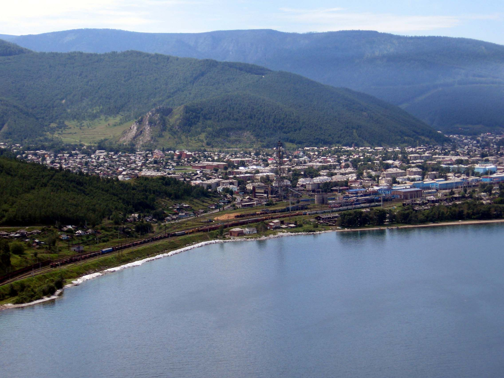
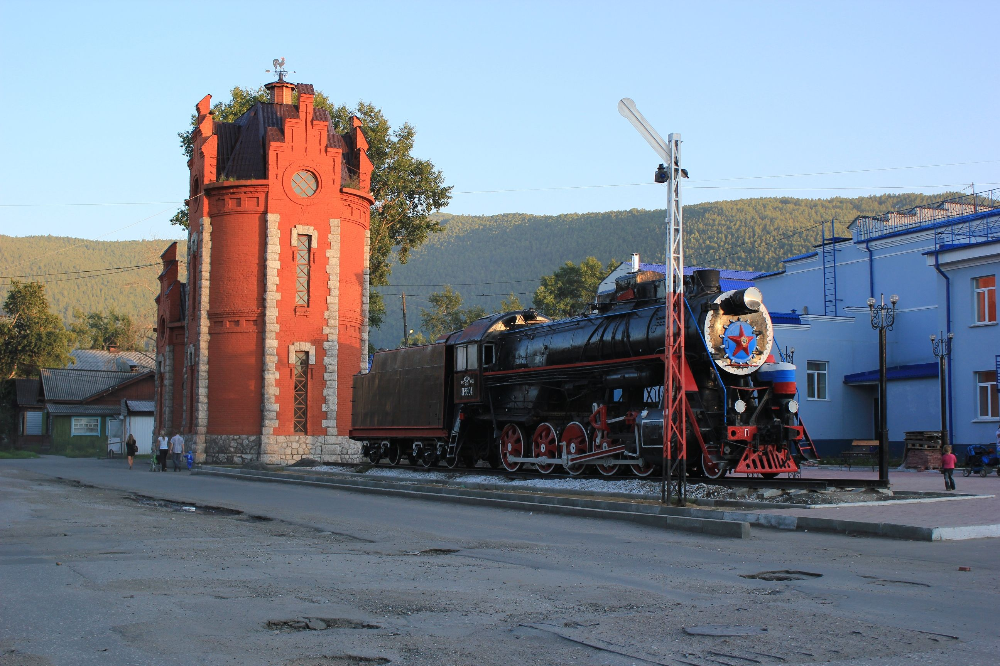
Байкальск
На Соболиную гору в Байкальск традиционно приезжают любители горных и обычных лыж, а также фрирайда. Всего 1,6 км отделяют прекрасно оборудованные и ухоженные склоны с подъёмниками от южного берега озера Байкал. Места здесь зимой в меру холодные и очень снежные, поэтому горнолыжный сезон длится целых полгода.
Ещё одно традиционное развлечение — зимой в Байкальске прямо на берегу озера строят большую ледяную баню. А летом из города удобно начинать пешеходные и горные маршруты по отрогам хребта Хамар-Бабан. Среди туристов популярны как многодневные путешествия, так и однодневные походы. Например, к скале-останцу Чёртов палец в долине реки Солзан.
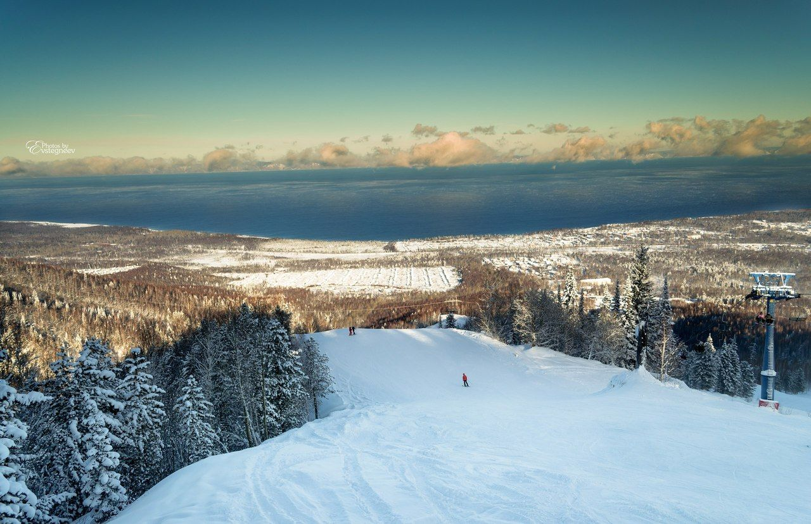
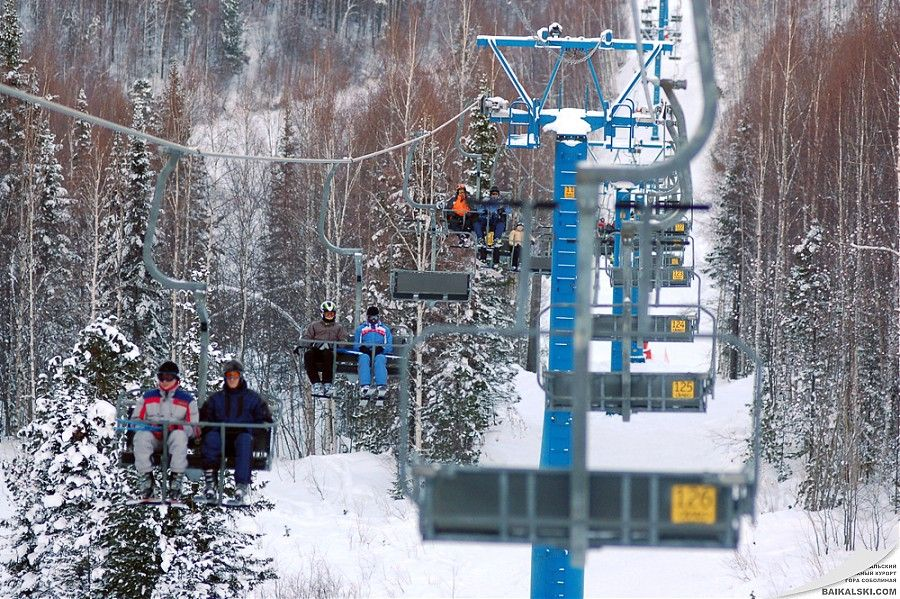
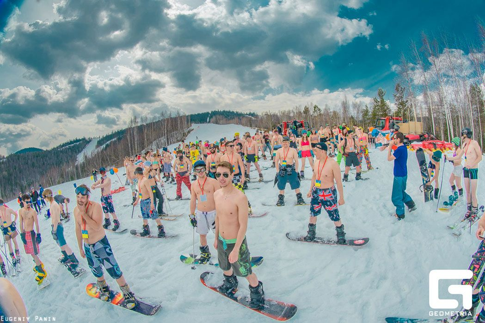
Кругобайкальская ЖД
Кругобайкальская Железная Дорога или как ее прозвали за невероятную стоимость строительных работ, – "золотая пряжка России", была построена в рекордно короткие сроки с 1902 по 1905 года. Каждый километр отрезка Слюдянка – Порт Байкал, протяженность которого 84 км, обошелся Российской империи в 130 тыс. рублей (93 тыс. руб на остальных участках Транссиба), на каждый километр уходило по одной тонне взрывчатки.
Единовременно на объекте работало около 14 тысяч рабочих, большинство из которых иностранцы и местные заключенные. Особый вклад внести итальянские специалисты, под их руководством построено большинство тоннелей и подпорных стенок. Всего на отрезке Слюдянка – Порт Байкал возведено 40 тоннелей, самый длинный из которых 807 м, 47 каменных галерей, 408 мостовых переходов.
Основные достопримечательности КБЖД
Слюдянка. Каменное здание станции, построенное из белого и розового мрамора
149 км. Старая Ангасолка. Каменный арочный виадук "Ангасольский"
130 км. Шабартуйский комплекс. Комплекс искусственных сооружений
123 км. Киркирей. Два параллельных тоннеля, построенных в разное время, а так же одпорно-одевающая стена многоярусной конструкции и заброшенное полотно с многочисленными подпорными стенками на мысе Киркерей
109 км. Станция Половинная. Самый длинный туннель дороги – 807 м
102 км. Итальянская стенка, построенная итальянец Феррари, одно из самых красивых сооружений на КБЖД.
Единовременно на объекте работало около 14 тысяч рабочих, большинство из которых иностранцы и местные заключенные. Особый вклад внести итальянские специалисты, под их руководством построено большинство тоннелей и подпорных стенок. Всего на отрезке Слюдянка – Порт Байкал возведено 40 тоннелей, самый длинный из которых 807 м, 47 каменных галерей, 408 мостовых переходов.
Основные достопримечательности КБЖД
Слюдянка. Каменное здание станции, построенное из белого и розового мрамора
149 км. Старая Ангасолка. Каменный арочный виадук "Ангасольский"
130 км. Шабартуйский комплекс. Комплекс искусственных сооружений
123 км. Киркирей. Два параллельных тоннеля, построенных в разное время, а так же одпорно-одевающая стена многоярусной конструкции и заброшенное полотно с многочисленными подпорными стенками на мысе Киркерей
109 км. Станция Половинная. Самый длинный туннель дороги – 807 м
102 км. Итальянская стенка, построенная итальянец Феррари, одно из самых красивых сооружений на КБЖД.
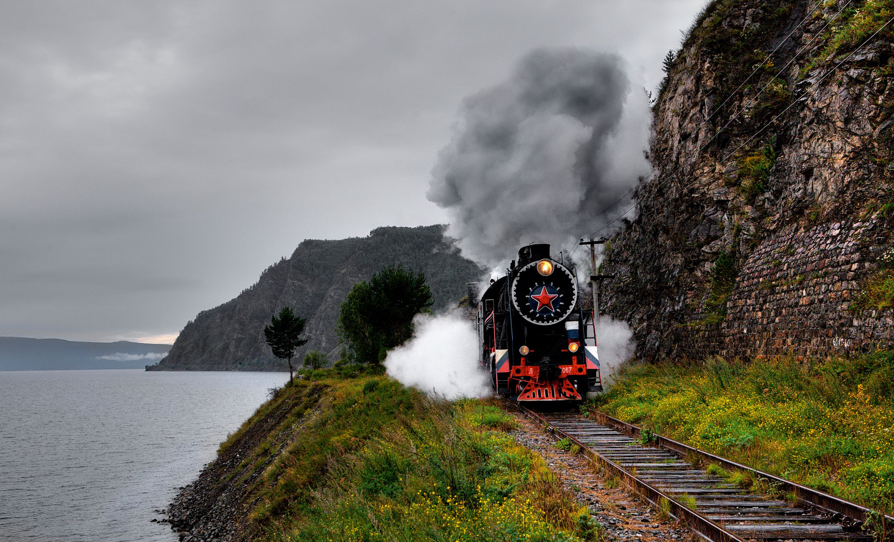
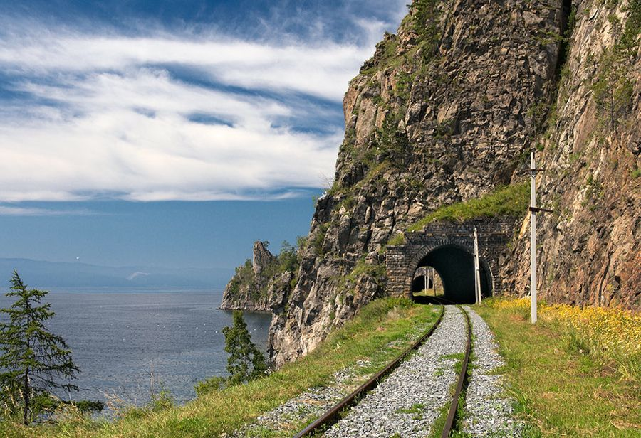
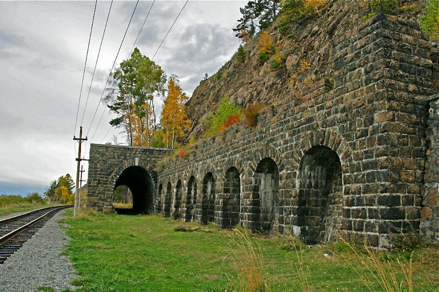
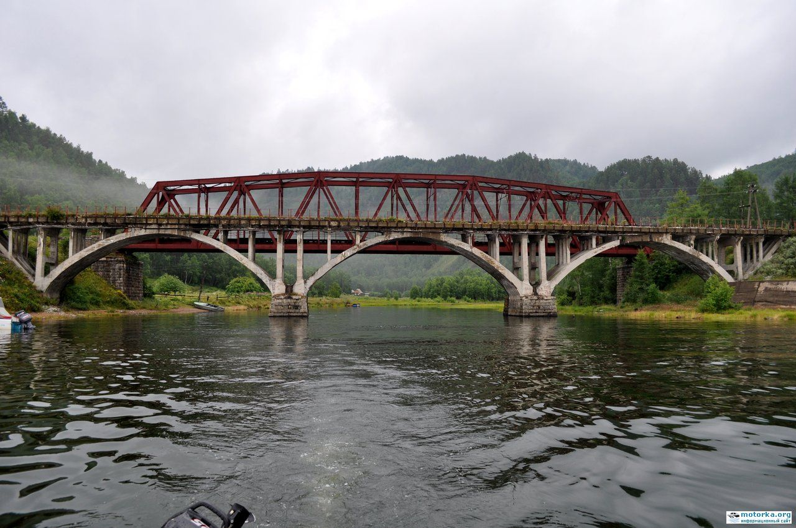